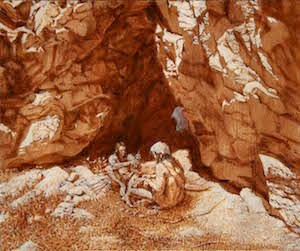
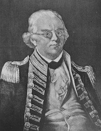

Mount Rainier History
From the American Indian tribes who gathered resources
in the area for millennia to the bustling park that
exists on the land today, a wide variety of groups have
found meaning and importance in the mountain now called
Mount Rainier. All of these groups mapped their values
on the landscape and contributed to a broader sense of
what the area should be. Though these values were often
very different and sometimes conflicted, they are all
held together today in a delicate balance by the park.
The mountain is a product of its past in more than just
a geological sense: understanding the human history of
Mount Rainier is crucial to realizing the intricacy of
the mountain today.

As European explorers began to ‘discover’ the Pacific Northwest
in the latter half of the 18th century, they came to a
land that was already inhabited by American Indian tribes.
In the area around what is today Mount Rainier National
Park, the Nisqually, Puyallup, Squaxin Island, Muckleshoot

The mountain captivated early European and American visitors.
Captain George Vancouver of the British Royal Navy observed
the mountain while surveying the Pacific coast in 1792 and
decided to name the mountain after his friend, Rear Admiral
Peter Rainier. Mountaineers made some of the first non-native
incursions on land, eager to summit the iconic peak. P.B. Van
Park.